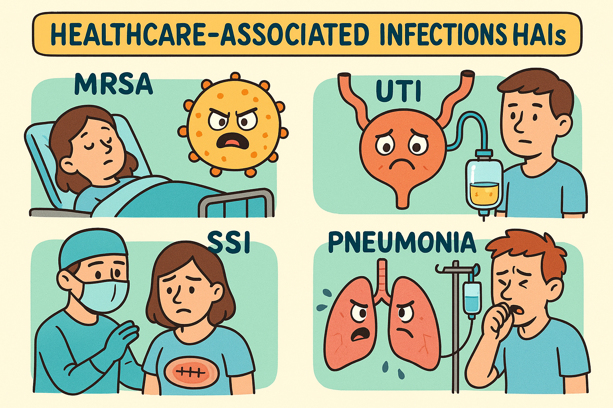
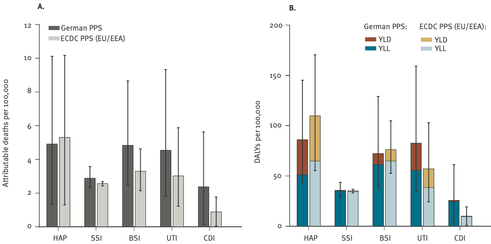

| Annual burden measure | Sample | HAP Point estimate (95% UI) | UTI Point estimate (95% UI) | BSI Point estimate (95% UI) | SSI Point estimate (95% UI) | CDI Point estimate (95% UI) | All Point estimate (95% UI) |
|---|---|---|---|---|---|---|---|
| HAIs per 100,000 | German PPS | 132.0 (103.5-170.2) | 265.1 (216.8-313.9) | 33.4 (20.5-52.3) | 115.4 (93.3-141.4) | 44.6 (31.1-61.8) | 592.1 (521.7-665.8) |
| German convenience | 162.3 (137.5-190.7) | 228.7 (200-260.7) | 52.7 (42-66.9) | 146.9 (126.5-167.8) | 44.5 (35.6-55.4) | 636.1 (586.7-689.2) | |
| ECDC PPS (EU/EEA) | 143.7 (136.9-150.8) | 174.7 (166.3-182.4) | 22.2 (20-25.1) | 111.3 (105.4-116.6) | 16.0 (14.2-18.3) | 467.9 (456.2-480.2) | |
| Attributable deaths per 100,000 | German PPS | 4.9 (1.4-10.1) | 4.5 (1.8-9.3) | 4.8 (2.5-8.7) | 2.9 (2.3-3.6) | 2.4 (0.1-5.6) | 20.1 (13.4-28.2) |
| German convenience | 6.1 (1.4-11.7) | 3.9 (1.6-8) | 7.9 (4.7-11.8) | 3.7 (3.2-4.2) | 2.5 (0.1-5.3) | 24.4 (17.2-32.6) | |
| ECDC PPS (EU/EEA) | 5.3 (1.3-10.2) | 3.0 (1.2-5.9) | 3.3 (2.1-4.6) | 2.6 (2.4-2.7) | 0.9 (0-1.8) | 15.3 (10.2-21.2) | |
| DALYs per 100,000 | German PPS | 86.1 (42.1-145.1) | 82.6 (34.5-159.2) | 72.2 (38.3-129) | 35.7 (28.9-43.7) | 25.9 (2.5-61.2) | 308.2 (221.2-416.3) |
| German convenience | 103.4 (51.5-166.5) | 69.5 (29.9-127.7) | 113.5 (72.2-166) | 45.0 (38.8-51.3) | 26.5 (2.5-55.6) | 359.3 (266.6-461.5) | |
| ECDC PPS (EU/EEA) | 109.8 (55.3-170.5) | 57.1 (24.3-102.9) | 76.2 (52.6-104.8) | 35.1 (33.3-36.8) | 10.0 (0.9-19.2) | 290.0 (214.9-376.9) |

Imagine arriving at hospital expecting care, comfort, and recovery. The hallways are bright, the staff are professional, and you trust you are in safe hands. Yet for many patients, the hospital stay comes with an unexpected twist, and sometime turns into a nightmare. Some patients leave the hospital with a healthier condition; some leave with the illness treated, but also carrying a new infection picked up along the way. But, a few of them, unfortunately would leave the world they forever love due to cross infections in the hospital.
These specific “quiet companions” of hospital care are called healthcare-associated infections (HAIs). They do not make headlines the way dramatic accidents or rare diseases do, but they shape the lives of patients and families in profound ways. Behind every infection is a story of a stay that was meant to heal but instead brought new suffering. Families who expected relief are faced with longer recoveries, complications, or even loss.
A Picture That Was Not Clear
Germany presents a striking example of this hidden burden. On the surface, its hospitals appear to be performing well, with lower infection rates than many of their European counterparts. That paints a reassuring picture, but it does not capture the full reality. The true challenge lies not inside the wards alone but in the sheer scale of hospital use. Germany admits more patients than almost any other country in Europe, and each admission creates another opportunity for infections to spread (Figure 1) (European Centre for Disease Control and Prevention (ECDC) 2012; Zacher et al. 2019).

Infections that start during a hospital stay are a worry for patients and for health systems. They can slow down recovery, add new complications, and sometimes even lead to death. While single cases can be counted, it is harder to see the bigger picture of how much these infections affect a whole country. Health leaders need that wider view in order to decide where to focus their efforts.
In Germany, this picture was not entirely clear. Earlier research had drawn on mixed data sources and different methods, which made comparisons across countries difficult. Some studies offered counts of cases or hospital prevalence rates, but these measures alone did not show the full weight of the problem. Estimates expressed in disability adjusted life years might offer a way to rank hospital infections alongside other health conditions and to see how Germany compares with its neighbours.
This uncertainty about the national burden of hospital infections created a blind spot for Germany. Researchers set out to close that gap by giving a clearer picture of how big the problem might be and how it compares with other countries.
Gathering the Clues
To explore this problem, researchers turned to a Europe-wide hospital survey carried out in 2011 and 2012. Hospitals across the continent recorded details about patients, treatments, and whether infections had developed during their stay.
Germany contributed two sets of data to this survey. One was a carefully designed national sample intended to reflect the diversity of hospitals in the country. The other was a larger but less structured sample that offered additional information. Looking at both together provided a broad and detailed foundation for analysis.
The focus was on five common types of hospital infections. These included
- healthcare-associated pneumonia (HAP),
- healthcare-associated primary bloodstream infection (BSI),
- healthcare-associated urinary tract infection (UTI),
- healthcare-associated Clostridioides difficile (C. difficile) infection (CDI),
- surgical site infection (SSI).
Each of these is well known to cause serious problems for patients and strain for health systems, making them natural candidates for closer study.
A New Lens on the Problem
What set this work apart was not only the survey data but also the method used to interpret it. The research team created a new approach packaged in an open-source software tool called BHAI. By making the tool freely available, they aimed to give countries a consistent way to estimate the overall impact of hospital infections.
Instead of just counting cases, the method translated infections into a measure of health loss across the population. It looked at how infections affect both length of life and quality of life, giving a more complete picture of the harm they cause. This approach also made it possible to compare Germany directly with its European neighbours using the same yardstick.
The results showed patterns that might otherwise have been missed. Some infections, like urinary tract infections, were very common but tended to be less severe. Others, such as pneumonia and bloodstream infections, were less frequent but caused much greater harm overall. The burden was not spread evenly either. Older patients were most affected, reflecting both their higher risk of infection and their greater vulnerability when things go wrong.
Researchers suggests that Germany carries a heavier overall burden of hospital infections than many other European countries, even though infection rates inside its hospitals are not especially high (Table 1). A likely reason is the country’s reliance on hospital care, with more beds and more admissions creating more chances for infections to spread.
Steps Toward Safer Care
Addressing this issue may require action on two levels. At the system level, reducing avoidable hospital stays could lower exposure in the first place. At the clinical level, prevention efforts might need to focus most on the infections that cause the greatest harm, especially pneumonia (HAP), bloodstream infections (BSI), and Clostridioides difficile (CDI). Good hygiene, infection control, and careful use of antibiotics remain essential parts of the solution.
Just as important is the new method itself. By offering a clearer and more consistent way to measure the impact of hospital infections, the BHAI tool helps countries see where their biggest challenges lie. With better information and well-directed strategies, the burden of these infections can be reduced, and hospitals can come closer to fulfilling their role as places of healing rather than hidden harm.
When people walk into a hospital, they hope to leave healthier than when they arrived. With better prevention strategies and clearer information, hospitals can live up to that expectation and remain places of recovery rather than sources of harm.
References
European Centre for Disease Control and Prevention (ECDC). 2012. “Point Prevalence Survey of Healthcare-Associated Infections and Antimicrobial Use in European Acute Care Hospitals - Protocol Version 4.3.”
Zacher, Benedikt, Sebastian Haller, Niklas Willrich, Jan Walter, Muna Abu Sin, Alessandro Cassini, Diamantis Plachouras, et al. 2019. “Application of a New Methodology and r Package Reveals a High Burden of Healthcare-Associated Infections (HAI) in Germany Compared to the Average in the European Union/European Economic Area, 2011 to 2012.” Euro Surveillance 24 (46): 1900135. https://doi.org/10.2807/1560-7917.ES.2019.24.46.1900135.